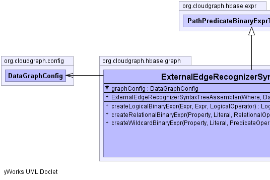
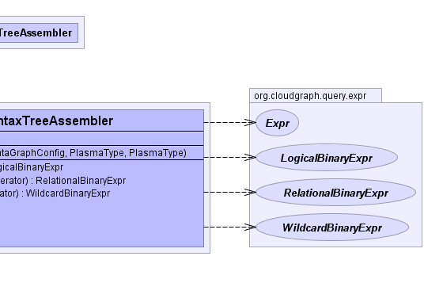

public class ExternalEdgeRecognizerSyntaxTreeAssembler extends PathPredicateBinaryExprTreeAssembler
visits
(traverses) the given predicate expression syntax tree depth-first using an
adapted shunting-yard algorithm and assembles a resulting binary tree
structure. In typical usage scenarios, a single expression tree is assembled
once, and then used to evaluate any number of graph edge or other results
based on a given context.
The adapted shunting-yard algorithm in general uses a stack of operators and operands, and as new binary tree nodes are detected and created they are pushed onto the operand stack based on operator precedence. The resulting binary expression tree reflects the syntax of the underlying query expression including the precedence of its operators.
ExternalEdgeRecognizerRelationalBinaryExpr,
ExternalEdgeRecognizerWildcardBinaryExpr,
ExprAssembler|  |  |
| Modifier and Type | Field and Description |
|---|---|
protected DataGraphConfig |
graphConfig |
columnKeyFactory, edgeTypecontextExpression, contextProperty, contextQueryProperty, contextType, predicate, rootType| Constructor and Description |
|---|
ExternalEdgeRecognizerSyntaxTreeAssembler(Where predicate,
DataGraphConfig graphConfig,
PlasmaType edgeType,
PlasmaType rootType)
Constructs an assembler based on the given predicate and graph edge type.
|
| Modifier and Type | Method and Description |
|---|---|
LogicalBinaryExpr |
createLogicalBinaryExpr(Expr left,
Expr right,
LogicalOperator operator)
Creates and returns a logical binary expression based on the given terms
and logical operator.
|
RelationalBinaryExpr |
createRelationalBinaryExpr(Property property,
Literal literal,
RelationalOperator operator)
Creates and returns a relational binary expression based on the given terms
and relational operator.
|
WildcardBinaryExpr |
createWildcardBinaryExpr(Property property,
Literal literal,
PredicateOperator operator)
Creates and returns a wildcard binary expression based on the given terms
and wildcard operator.
|
endgetResult, log, serializegetChildExpressionCount, getChildExpressions, getLogicalOperatorCount, hasChildExpressions, hasWildcardprotected DataGraphConfig graphConfig
public ExternalEdgeRecognizerSyntaxTreeAssembler(Where predicate,
DataGraphConfig graphConfig,
PlasmaType edgeType,
PlasmaType rootType)
predicate - the predicateedgeType - the graph edge type which is the type for the reference property
within the graph which represents an edgerootType - the graph root typegraphConfig - the graph configpublic RelationalBinaryExpr createRelationalBinaryExpr(Property property, Literal literal, RelationalOperator operator)
DefaultBinaryExprTreeAssemblercreateRelationalBinaryExpr in interface ExprAssemblercreateRelationalBinaryExpr in class DefaultBinaryExprTreeAssemblerproperty - the property termliteral - the literal termoperator - the relational operatorpublic WildcardBinaryExpr createWildcardBinaryExpr(Property property, Literal literal, PredicateOperator operator)
DefaultBinaryExprTreeAssemblercreateWildcardBinaryExpr in interface ExprAssemblercreateWildcardBinaryExpr in class DefaultBinaryExprTreeAssemblerproperty - the property termliteral - the literal termoperator - the wildcard operatorpublic LogicalBinaryExpr createLogicalBinaryExpr(Expr left, Expr right, LogicalOperator operator)
DefaultBinaryExprTreeAssemblercreateLogicalBinaryExpr in interface ExprAssemblercreateLogicalBinaryExpr in class DefaultBinaryExprTreeAssembleroperator - the logical operatorCloudGraph® is a registered trademark of TerraMeta Software, Inc. Copyright © 2014 - All Rights Reserved.